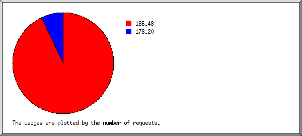
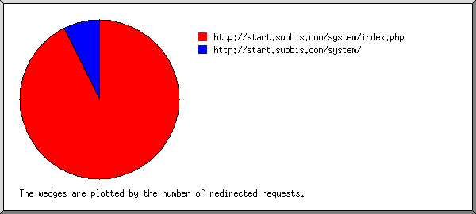
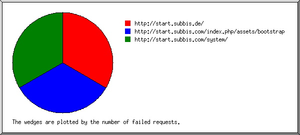
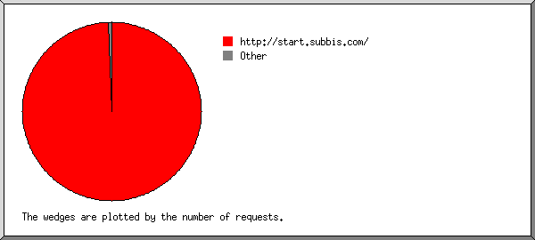
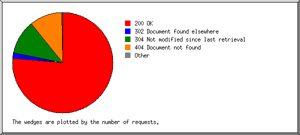
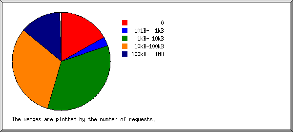
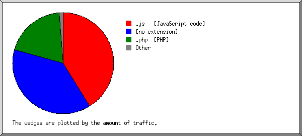
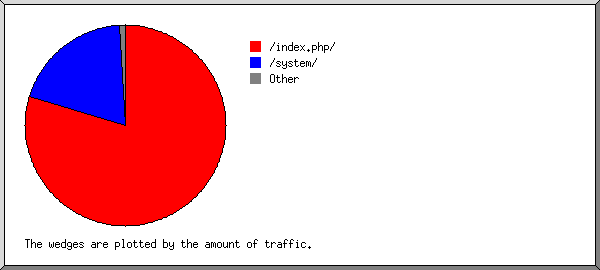
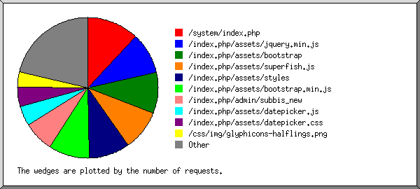

Web Server Statistics for start.subbis.com
Web Server Statistics for start.subbis.com
Program started on Tue, Jan 01 2013 at 7:02 AM.
Analyzed requests from Sat, Dec 29 2012 at 10:19 AM to Mon, Dec 31 2012 at 9:19 AM (1.96 days).
Web Server Statistics for start.subbis.comProgram started on Tue, Jan 01 2013 at 7:02 AM.
Analyzed requests from Sat, Dec 29 2012 at 10:19 AM to Mon, Dec 31 2012 at 9:19 AM (1.96 days).
(Go To: Top | General Summary | Monthly Report | Daily Summary | Hourly Summary | Domain Report | Organization Report | Redirected Referrer Report | Failed Referrer Report | Referring Site Report | Browser Report | Browser Summary | Operating System Report | Status Code Report | File Size Report | File Type Report | Directory Report | Request Report)
Successful requests: 2,735
Average successful requests per day: 1,396
Successful requests for pages: 6
Average successful requests for pages per day: 2
Failed requests: 333
Redirected requests: 58
Distinct files requested: 239
Distinct hosts served: 6
Data transferred: 89.10 megabytes
Average data transferred per day: 45.50 megabytes
(Go To: Top | General Summary | Monthly Report | Daily Summary | Hourly Summary | Domain Report | Organization Report | Redirected Referrer Report | Failed Referrer Report | Referring Site Report | Browser Report | Browser Summary | Operating System Report | Status Code Report | File Size Report | File Type Report | Directory Report | Request Report)
Each unit ( ) represents 1 request for a page.
) represents 1 request for a page.
| month | #reqs | #pages | |
|---|---|---|---|
| Dec 2012 | 2735 | 6 |   |
Busiest month: Dec 2012 (6 requests for pages).
(Go To: Top | General Summary | Monthly Report | Daily Summary | Hourly Summary | Domain Report | Organization Report | Redirected Referrer Report | Failed Referrer Report | Referring Site Report | Browser Report | Browser Summary | Operating System Report | Status Code Report | File Size Report | File Type Report | Directory Report | Request Report)
Each unit () represents 1 request for a page.
| day | #reqs | #pages | |
|---|---|---|---|
| Sun | 269 | 2 | |
| Mon | 9 | 0 | |
| Tue | 0 | 0 | |
| Wed | 0 | 0 | |
| Thu | 0 | 0 | |
| Fri | 0 | 0 | |
| Sat | 2457 | 4 | |
(Go To: Top | General Summary | Monthly Report | Daily Summary | Hourly Summary | Domain Report | Organization Report | Redirected Referrer Report | Failed Referrer Report | Referring Site Report | Browser Report | Browser Summary | Operating System Report | Status Code Report | File Size Report | File Type Report | Directory Report | Request Report)
Each unit () represents 1 request for a page.
| hour | #reqs | #pages | |
|---|---|---|---|
| 0 | 0 | 0 | |
| 1 | 0 | 0 | |
| 2 | 0 | 0 | |
| 3 | 0 | 0 | |
| 4 | 0 | 0 | |
| 5 | 0 | 0 | |
| 6 | 0 | 0 | |
| 7 | 0 | 0 | |
| 8 | 0 | 0 | |
| 9 | 9 | 0 | |
| 10 | 99 | 2 | |
| 11 | 276 | 3 | |
| 12 | 635 | 1 | |
| 13 | 356 | 0 | |
| 14 | 260 | 0 | |
| 15 | 435 | 0 | |
| 16 | 291 | 0 | |
| 17 | 351 | 0 | |
| 18 | 22 | 0 | |
| 19 | 1 | 0 | |
| 20 | 0 | 0 | |
| 21 | 0 | 0 | |
| 22 | 0 | 0 | |
| 23 | 0 | 0 |
(Go To: Top | General Summary | Monthly Report | Daily Summary | Hourly Summary | Domain Report | Organization Report | Redirected Referrer Report | Failed Referrer Report | Referring Site Report | Browser Report | Browser Summary | Operating System Report | Status Code Report | File Size Report | File Type Report | Directory Report | Request Report)
Listing domains, sorted by the amount of traffic.
| #reqs | %bytes | domain |
|---|---|---|
| 2735 | 100% | [unresolved numerical addresses] |
(Go To: Top | General Summary | Monthly Report | Daily Summary | Hourly Summary | Domain Report | Organization Report | Redirected Referrer Report | Failed Referrer Report | Referring Site Report | Browser Report | Browser Summary | Operating System Report | Status Code Report | File Size Report | File Type Report | Directory Report | Request Report)

Listing organizations, sorted by the number of requests.
| #reqs | %bytes | organization |
|---|---|---|
| 2544 | 92.66% | 186.48 |
| 191 | 7.34% | 178.20 |
(Go To: Top | General Summary | Monthly Report | Daily Summary | Hourly Summary | Domain Report | Organization Report | Redirected Referrer Report | Failed Referrer Report | Referring Site Report | Browser Report | Browser Summary | Operating System Report | Status Code Report | File Size Report | File Type Report | Directory Report | Request Report)

Listing referring URLs, sorted by the number of redirected requests.
| #reqs | URL |
|---|---|
| 50 | http://start.subbis.com/system/index.php |
| 4 | http://start.subbis.com/system/ |
(Go To: Top | General Summary | Monthly Report | Daily Summary | Hourly Summary | Domain Report | Organization Report | Redirected Referrer Report | Failed Referrer Report | Referring Site Report | Browser Report | Browser Summary | Operating System Report | Status Code Report | File Size Report | File Type Report | Directory Report | Request Report)

Listing referring URLs, sorted by the number of failed requests.
| #reqs | URL |
|---|---|
| 1 | http://start.subbis.de/ |
| 1 | http://start.subbis.com/index.php/assets/bootstrap |
| 1 | http://start.subbis.com/system/ |
(Go To: Top | General Summary | Monthly Report | Daily Summary | Hourly Summary | Domain Report | Organization Report | Redirected Referrer Report | Failed Referrer Report | Referring Site Report | Browser Report | Browser Summary | Operating System Report | Status Code Report | File Size Report | File Type Report | Directory Report | Request Report)

Listing referring sites, sorted by the number of requests.
| #reqs | site |
|---|---|
| 2659 | http://start.subbis.com/ |
| 16 | http://start.subbis.de/ |
(Go To: Top | General Summary | Monthly Report | Daily Summary | Hourly Summary | Domain Report | Organization Report | Redirected Referrer Report | Failed Referrer Report | Referring Site Report | Browser Report | Browser Summary | Operating System Report | Status Code Report | File Size Report | File Type Report | Directory Report | Request Report)
Listing browsers with at least 1 request for a page, sorted by the number of requests for pages.
| #reqs | #pages | browser |
|---|---|---|
| 1834 | 6 | Mozilla/5.0 (Macintosh; Intel Mac OS X 10_6_8) AppleWebKit/537.11 (KHTML, like Gecko) Chrome/23.0.1271.101 Safari/537.11 |
| 901 | 0 | [not listed: 3 browsers] |
(Go To: Top | General Summary | Monthly Report | Daily Summary | Hourly Summary | Domain Report | Organization Report | Redirected Referrer Report | Failed Referrer Report | Referring Site Report | Browser Report | Browser Summary | Operating System Report | Status Code Report | File Size Report | File Type Report | Directory Report | Request Report)
Listing browsers with at least 1 request for a page, sorted by the number of requests for pages.
| # | #reqs | #pages | browser |
|---|---|---|---|
| 1 | 2025 | 6 | Safari |
| 1834 | 6 | Safari/537 | |
| 710 | 0 | [not listed: 2 browsers] |
(Go To: Top | General Summary | Monthly Report | Daily Summary | Hourly Summary | Domain Report | Organization Report | Redirected Referrer Report | Failed Referrer Report | Referring Site Report | Browser Report | Browser Summary | Operating System Report | Status Code Report | File Size Report | File Type Report | Directory Report | Request Report)
Listing operating systems, sorted by the number of requests for pages.
| # | #reqs | #pages | OS |
|---|---|---|---|
| 1 | 2544 | 6 | Macintosh |
| 2 | 191 | 0 | Windows |
| 191 | 0 | Windows XP |
(Go To: Top | General Summary | Monthly Report | Daily Summary | Hourly Summary | Domain Report | Organization Report | Redirected Referrer Report | Failed Referrer Report | Referring Site Report | Browser Report | Browser Summary | Operating System Report | Status Code Report | File Size Report | File Type Report | Directory Report | Request Report)

Listing status codes, sorted numerically.
| #reqs | status code |
|---|---|
| 2386 | 200 OK |
| 4 | 301 Document moved permanently |
| 54 | 302 Document found elsewhere |
| 349 | 304 Not modified since last retrieval |
| 331 | 404 Document not found |
| 2 | 500 Internal server error |
(Go To: Top | General Summary | Monthly Report | Daily Summary | Hourly Summary | Domain Report | Organization Report | Redirected Referrer Report | Failed Referrer Report | Referring Site Report | Browser Report | Browser Summary | Operating System Report | Status Code Report | File Size Report | File Type Report | Directory Report | Request Report)

| size | #reqs | %bytes |
|---|---|---|
| 0 | 463 | |
| 1B- 10B | 2 | |
| 11B- 100B | 9 | |
| 101B- 1kB | 83 | 0.03% |
| 1kB- 10kB | 943 | 3.90% |
| 10kB-100kB | 860 | 43.77% |
| 100kB- 1MB | 375 | 52.30% |
(Go To: Top | General Summary | Monthly Report | Daily Summary | Hourly Summary | Domain Report | Organization Report | Redirected Referrer Report | Failed Referrer Report | Referring Site Report | Browser Report | Browser Summary | Operating System Report | Status Code Report | File Size Report | File Type Report | Directory Report | Request Report)

Listing extensions with at least 0.1% of the traffic, sorted by the amount of traffic.
| #reqs | %bytes | extension |
|---|---|---|
| 1060 | 41.16% | .js [JavaScript code] |
| 765 | 38.07% | [no extension] |
| 332 | 19.57% | .php [PHP] |
| 179 | 0.87% | .css [Cascading Style Sheets] |
| 277 | 0.24% | .png [PNG graphics] |
| 122 | 0.08% | [not listed: 5 extensions] |
(Go To: Top | General Summary | Monthly Report | Daily Summary | Hourly Summary | Domain Report | Organization Report | Redirected Referrer Report | Failed Referrer Report | Referring Site Report | Browser Report | Browser Summary | Operating System Report | Status Code Report | File Size Report | File Type Report | Directory Report | Request Report)

Listing directories with at least 0.01% of the traffic, sorted by the amount of traffic.
| #reqs | %bytes | directory |
|---|---|---|
| 1916 | 79.63% | /index.php/ |
| 334 | 19.57% | /system/ |
| 372 | 0.67% | /themes/ |
| 99 | 0.09% | /css/ |
| 4 | 0.02% | [root directory] |
| 3 | 0.01% | /cgi-sys/ |
| 7 | 0.01% | [not listed: 1 directory] |
(Go To: Top | General Summary | Monthly Report | Daily Summary | Hourly Summary | Domain Report | Organization Report | Redirected Referrer Report | Failed Referrer Report | Referring Site Report | Browser Report | Browser Summary | Operating System Report | Status Code Report | File Size Report | File Type Report | Directory Report | Request Report)

Listing files with at least 20 requests, sorted by the number of requests.
| #reqs | %bytes | last time | file |
|---|---|---|---|
| 331 | 19.57% | Dec/30/12 2:40 PM | /system/index.php |
| 60 | Dec/30/12 12:42 PM | /system/index.php?S=26f43d1dbaabf9cfc3ab130cebe1d344fafcf007&D=cp&C=javascript&M=load&file=ext_scripts | |
| 35 | Dec/29/12 11:25 AM | /system/index.php?S=8d67f92125f356bed4f9ee3fddea2a694f0a40ea&D=cp&C=javascript&M=load&file=ext_scripts | |
| 10 | Dec/29/12 12:48 PM | /system/index.php?S=f1a151ab8074105106ce2553d77149e1508303c4&D=cp&C=javascript&M=load&file=ext_scripts | |
| 257 | 26.09% | Dec/31/12 9:19 AM | /index.php/assets/jquery.min.js |
| 257 | 34.17% | Dec/31/12 9:19 AM | /index.php/assets/bootstrap |
| 256 | 1.02% | Dec/31/12 9:19 AM | /index.php/assets/superfish.js |
| 256 | 0.71% | Dec/31/12 9:19 AM | /index.php/assets/styles |
| 256 | 7.03% | Dec/31/12 9:19 AM | /index.php/assets/bootstrap.min.js |
| 190 | 2.91% | Dec/30/12 12:08 PM | /index.php/admin/subbis_new |
| 125 | 1.76% | Dec/31/12 9:19 AM | /index.php/assets/datepicker.js |
| 125 | 0.58% | Dec/31/12 9:19 AM | /index.php/assets/datepicker.css |
| 99 | 0.09% | Dec/31/12 9:19 AM | /css/img/glyphicons-halflings.png |
| 67 | 0.42% | Dec/30/12 12:08 PM | /index.php/assets/bootstrap-fileupload.js |
| 55 | 4.58% | Dec/30/12 12:08 PM | /index.php/assets/widgets.js |
| 52 | 0.23% | Dec/30/12 11:59 AM | /index.php/admin |
| 409 | 0.84% | Dec/31/12 9:19 AM | [not listed: 87 files] |